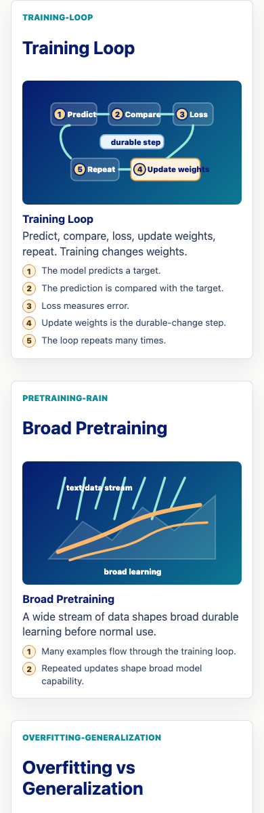
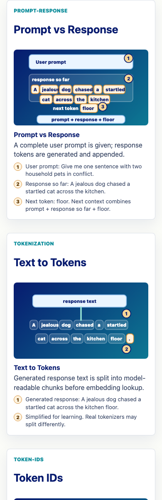
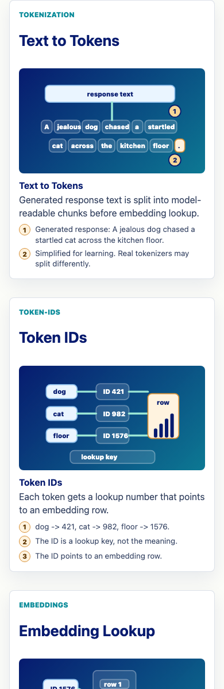
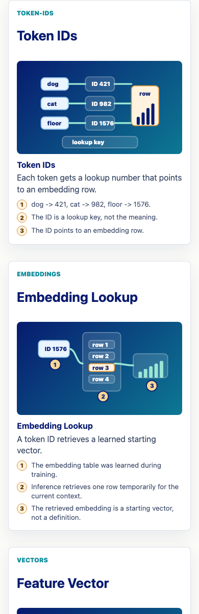
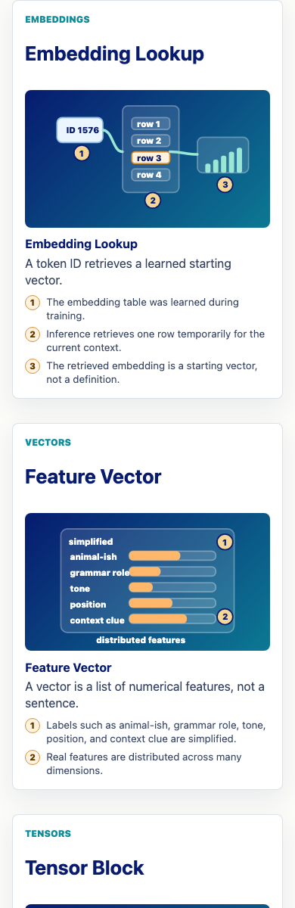
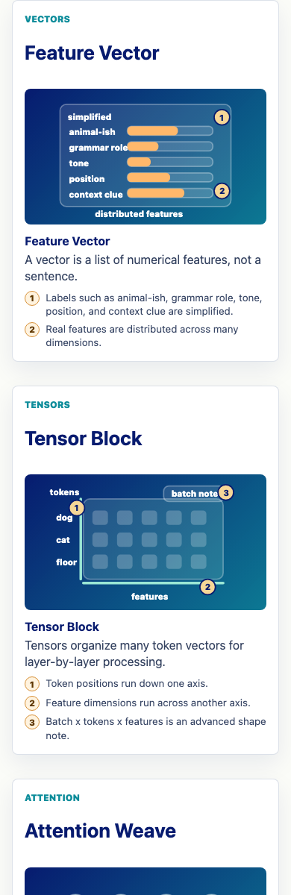
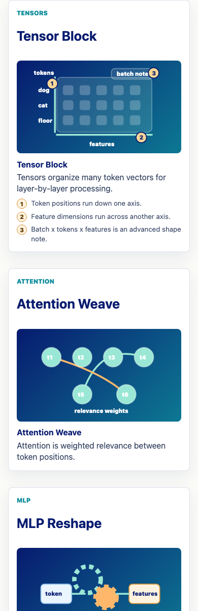
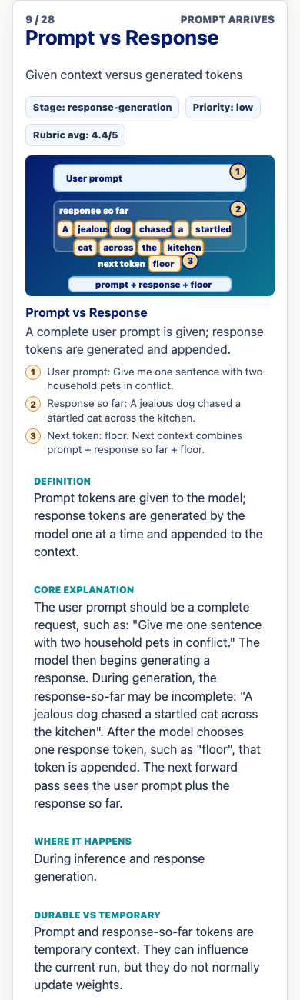

Prompt Life v0.9.2
Visual Repair Report
This pass fixes Batch 1 and Batch 2 visual/text alignment issues, centralizes the canonical prompt-response example, and refreshes review/PDF artifacts for mobile-first human review.
What Changed
- Added
src/data/canonicalExamples.tsas the shared source for the prompt, generated response, response-so-far, next-token choices, and attention-only variant. - Updated Prompt vs Response, Tokenization, Token IDs, Embeddings, Vectors, Tensors, Autoregression, Prompt Run, exercises, glossary examples, and review cards to use the canonical example.
- Repaired visual aids so in-canvas labels are short and full explanations live in HTML captions and numbered callouts.
- Updated export paths to
docs/review/prompt-life-lesson-cards-v0-9-2.pdfanddocs/content-inventory/prompt-life-lesson-cards-v0-9-2-visual-repair.pdf. - Bumped the visible app version to
v0.9.2.
Canonical Example
User prompt: Give me one sentence with two household pets in conflict.
Generated response: A jealous dog chased a startled cat across the kitchen floor.
Response so far: A jealous dog chased a startled cat across the kitchen
Next-token candidates: floor, room, tiles, counter, quantum, elephant. Chosen token: floor.
Attention-only variant: A jealous dog chased a startled cat because it hissed. Teaching target: it -> cat.
Verification
npm install: passed, 0 vulnerabilities.npm run typecheck: passed.npm run build: passed.npm run build:pages: passed.npm run export:lesson-pdf: passed.npm run export:lesson-cards: passed.- Mobile visual-card overflow checks at 320px, 390px, and 430px: passed for the repaired visual cards.
- In-app browser review-route QA found the repaired visual cards and canonical text.
Files Changed
README.md,package.json, andscripts/export-lesson-pdf.mjssrc/components/ConceptAnimations.tsx,src/components/ExerciseSystem.tsx, andsrc/components/VisualAids.tsxsrc/data/canonicalExamples.ts,src/data/content.ts,src/data/contentReview.js,src/data/exercises.ts, andsrc/data/promptRun.tssrc/main.tsxandsrc/styles/global.css- v0.9.2 curriculum docs, lesson PDFs, screenshots, and this report PDF
How To Run Locally
cd ~/Desktop/promptlifenpm installnpm run dev- Open the Vite URL, usually
http://localhost:5173/. - For phone testing from GitHub Pages, use
https://kevinhegg.github.io/promptlife/aftermaindeploys.
Screenshots








Known Remaining Issues
- Source review is still needed before publication-final claims about transformer internals.
- The tensor visual remains 2D for PDF reliability; any future 3D tensor needs a print-safe fallback.
- Real iPhone Safari testing remains the final post-deploy check.
Next Three v0.2 Improvements
- Implement Batch 3 as Attention, MLP, Layers, and Hidden States with the same canonical thread.
- Add source citations or bibliography notes for Batch 1 and Batch 2 concepts.
- Add a reusable screenshot/overflow script to make future visual-aid QA repeatable.